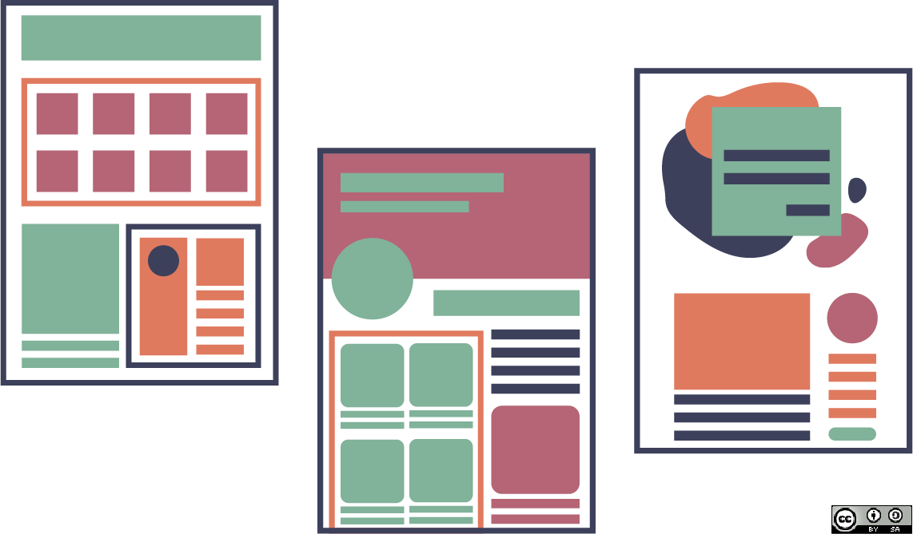

Etiquetas Semánticas

Las etiquetas semanticas son herramientas de estructura para diseñar sitios web modernos. Es lenguaje HTML en su quinta entrega siendo renovado y llamado HTML5. en el cual se han incorporado varias funciones las cuales no estaban en sus anteriores versiones, con estas podemos lograr una pagina mas deseada y con un mayor diseño a lo planeado.
El termino semántica se refire al estudio de los significados de las palabras y expresiones linguisticas.
Estas etiquetas tienen un mecanismo y es corresponder a partes especificas en un sitio web, como una cabecera, su estructura y el pie de pagina que cada uno esta definido por su propia etiqueta y que asi sea mas facil de leerlo.
Cualquier sistema puede porcesar, abrir o editar dichas estructuras, en la cabecera tenemos el elemento HEADER, en la estructura de web los ARTICLES y en las secciones primarias la etiqueta NAV, en ella se determina que contener en su estructura ya sean textos, imagenes o cualquier tipo de archivo multimedia.
Cabe recalcar que las etiquetas semanticas no indican la forma en que se muestran en la estrucutra de pagina sino el significado de dicha etiqueta.
La etiqueta que usamos en cabecera es < header > utilizada casi siempre para la introducion, para el indice o la navegacion dentro del propio documento.
La etiqueta < hgroup > se usa para poder agrupar un conjunto de elementos en los encabezados.
La etiqueta < nav > es usada para la navegacion del documento y sus bloques principales.
La etiqueta < article >con ella enmarcar contenido independiente como noticias o articulos de otro lugar.
La etiqueta < section > se usa para una seccion generica en el documento como una agrupacion de contenido como un encabezado, un menu o informacion de contacto.
La etiqueta < aside > es para enmarcar una parte de contenido como un glosario, paginas relacionadas o barras laterales.
La etiqueta < footer > es para enmarcar un pie de pagina que contenga informacion del autor, licencias, terminos de uso, contactos, etc.
Etiquetas semánticas del HTML5. (s. f.). Desarrollo Web. https://desarrolloweb.com/articulos/etiquetas-semanticas-html5.html HTML5: Nuevas etiquetas semánticas y estructurales - Arume. (s. f.). HTML5: Nuevas etiquetas semánticas y estructurales. https://www.arumeinformatica.es/blog/html5-nuevas-etiquetas-semanticas-y-estructurales/CSS Grid
El CSS Grid es un mecanismo de maquetacion en rejilla para crear paginas web y diseñar con libertad lo que hagamos.
Se trata de una distribucion de filas y columnas de manera que se puedan posicionar en cualquier parte, tener cualquier tipo de tamaño deseas y regiones con capas diferentes algo como dividir una pagina de diferentes formas o hacer un collage de diferentes formas y separadas.
Con este tenemos bastantes ventajas como un control total de dos dimensiones, no son tablas que requieren estar juntas, colocar cualquier items en ellas y la ayuda de colocar items con su caracteristica de auto-placent.
de Zúñiga, F. G. (2021, 15 junio). ¿Qué es CSS Grid? Blog de arsys.es. https://www.arsys.es/blog/programacion/css-grid-layout/